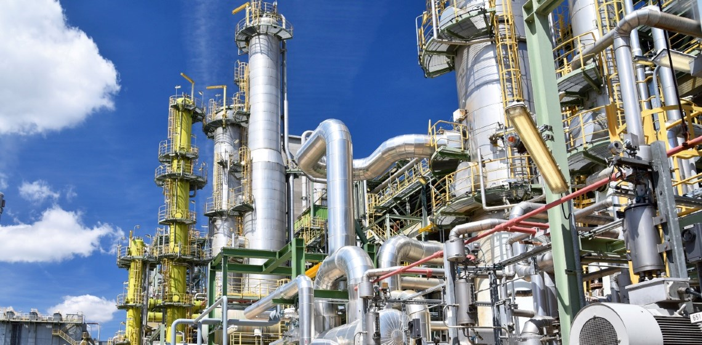
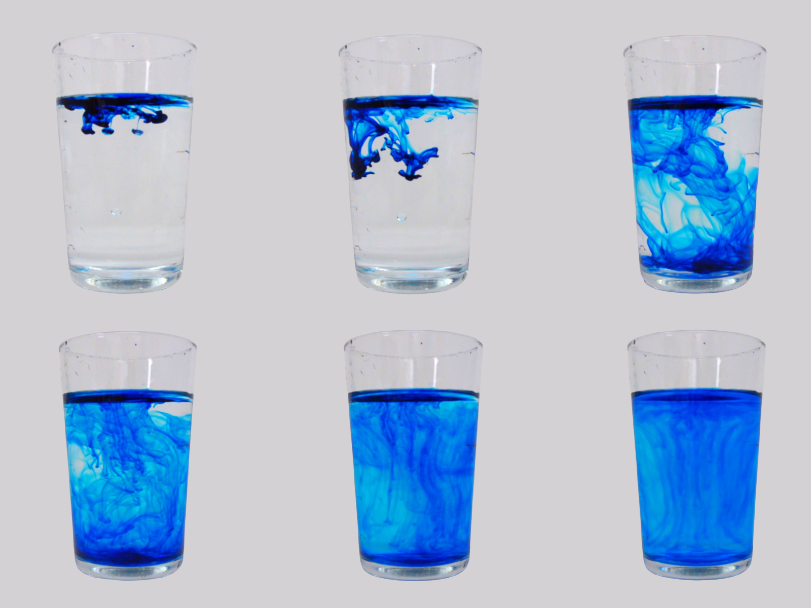

What is mass transfer? - an introductory study of the connection between diffusion and mass transfer
By: Richmond Ohene-Larbi
Sunday, 10th March, 2024
Ever wondered why the smell of perfume travels from one side of a room to the other? Or why some things can disappear when you mix them with liquids? It's like magic, right? Well, it's not really magic—it's something called mass transfer. It's how things move and mix with each other, like when you try to mix sugar into your drink or when you smell something from far away. Mass transfer is like the secret behind all these cool things happening around us further explains more principles like distillation, extraction, absorption and filtration. Let's delve deeper
Concept of Mass Transfer
Mass transfer is the principle whereby there is exchange of substances
between two surfaces that are of different concentrations with each
other. Mass transfer is about substances moving from where there's a lot
(in terms of concentration) to where there's less. It can happen in
gases or liquids, and it's due to the random speeds of molecules or
currents in a fluid. In chemical engineering applications, it usually
occurs between different phases, where the concentrations on each side
are linked by phase equilibrium. It is the net movement of
mass from one location to another. The locations vary as
they may be from one phase to another phase, between solutions,
fractions or from one component to another. The mass can mean tiny
particles such as atoms, molecules and ions. In some cases, it involves
phase changes occurring. For an example, when we take a look at
distillation, we realize there is a phase change from liquid to vapor.
Envision it as things swapping places, like when oil moves from a solid
to a liquid in solvent extraction.

As stated earlier, mass transfer can be used to explain multiple
concepts. One of the useful models for mass transfer between phases is
The two film theory
Mass transfer of solute from one phase to another involves transport
from the bulk of one phase to the phase boundary or interface, then
movement from the interface into the bulk of the second phase.
We'll discuss how it applies to diffusion, but before diving into that, let's examine the driving force
Diffusion
Diffusion is a mass transfer phenomenon that promotes even distribution of a chemical species over space and time. It barely occurs across a membrane as substances would move from one phase (region) to the other (mostly from the highly concentrated region to the less concentrated region) until the particles are uniformly distributed across the two regions. Imagine dropping a solid, like solid KMNO4 crystal, into a clear water solution. Initially concentrated at one spot, the solid eventually leads to a uniform color change across the entire solution, depicting even distribution of the crystals inside the water solution.
Diffusion processes occur in systems with varying concentrations, aiming to achieve equilibrium. In a quiescent system, the concentration differences resulting from molecular motion and hindered by internal friction become equal. The rate of diffusion in a fluid is primarily density-dependent, with liquids exhibiting slower rates (on the order of cm2 per day) compared to gases (on the order of cm2 s−1).
The rate of diffusion can be expressed as the amount of substance passing through a unit volume per unit time, i.e. J. This amount is directly proportional to the concentration change per unit path length of the diffusing component, i.e. the concentration gradient, dc/dl. The correlation between mass transport and the concentration gradient is expressed by Fick's first law: J=-D dC/dl

An image showing how diffusing occurs in a solution.
Obiviously, there will be certain factors that will affect the rate of diffusion. Some of the factors are:
- Concentration Gradient: A higher concentration gradient causes a higher rate of diffusion. A higher concentration gradient implies the particle travels a shorter distance with respect to its initial concentration to form a uniform distribution.
- Temperature: Thus diffusion rate increases as temperature increases.
- Resistance: This can be related directly to the formula of the diffusion rate equation. A higher resistance causes a lower diffusion rate as the rate of diffusion is inversely related to resistance.
Diffusion is a very broad concept on its own. Assuming we are taking two substances as case study, we realize that there would be different instances of diffusion occurring. One could be the situation where one system is stationary and the other is not. Another could be where both of the species are diffusing together in concurrent or counter current fashion.
Diffusion is everywhere as it occurs in solids, liquids, spherical structures, (in the case of evaporation of droplets). Diffusion can occur in both steady and unsteady state (transient) conditions. Let's look at steady state a little further.
Steady state is a state where a process does not change or even if there would be changes, the changes occur slightly over time. It can also be a situation in which all state variables are constant in spite of ongoing processes that strive to change them. An example can be where a steel heated in a carbon rich atmosphere makes the carbon atoms diffuse into the steel hardening it. In a steady-state system, both parameters and variables remain constant, and there is no change in the system's state over time. For example, as a species like A diffuses from one location to another within a medium, both the concentration and the rate of transport of the species remain constant throughout the process. The solutions to this state problems may be viewed as states of equilibrium which only become altered when the forces ensuring the dynamicity of equilibrium are altered. This give rise to the concept of transient diffusion or unsteady state diffusion.
Conclusion
Diffusion is a broad concept and is one of the applications of mass transfer. Mass transfer can be used to explain other principles and the main theory that can be seen as common to all will be the rate theories. Diffusion occurs in daily life and sometimes we are negligent of the fact that it is occurring. To design for example a power plant, other concepts in mass transfer is necessary as mass transfer is an undisputed basic building block of chemical engineering.
References
Mass Transfer. (2018). Coulson and Richardson’s Chemical Engineering, 267–374. Mass Transfer Coulson and Richardson
Duening, T. N., Hisrich, R. D., & Lechter, M. A. (2021). 5 - Developing Your Products. In T. N. Duening, R. D. Hisrich, & M. A. Lechter (Eds.), Technology Entrepreneurship (Third Edition) (Third Edition, pp. 61–79). Academic Press. Developing your products
BINAY K. DUTTA PRINCIPLES OF MASS TRANSFER.pdf. ISBN-978-81-203-2990-4 November, 2009 Published by Asoke K. Ghosh, PHI Learning Private Limited, New Delhi-110001
copyright, 2024